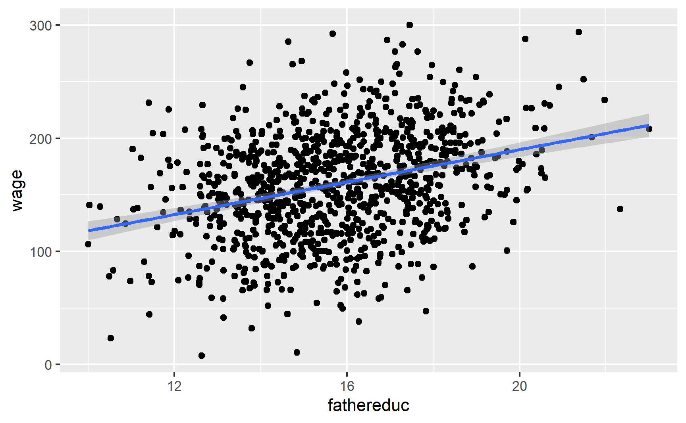
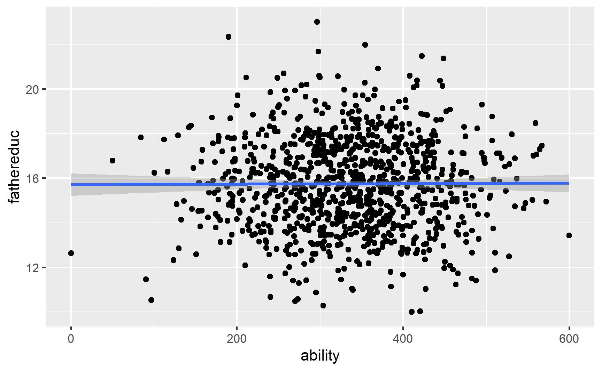

There’s a set of videos that walks through each section below. To make it easier for you to jump around the video examples, I cut the long video into smaller pieces and included them all in one YouTube playlist.
You can also watch the playlist (and skip around to different sections) here:
Background
For all these examples, we’re interested in the perennial econometrics question of whether an extra year of education causes increased wages. Economists love this stuff.
We’ll explore the question with three different datasets: a fake one I made up and two real ones from published research.
Make sure you load all these libraries before getting started:
Code
library(tidyverse) # ggplot(), %>%, mutate(), and friendslibrary(broom) # Convert models to data frameslibrary(modelsummary) # Create side-by-side regression tableslibrary(kableExtra) # Add fancier formatting to tableslibrary(estimatr) # Run 2SLS models in one step with iv_robust()
Education, wages, and father’s education (fake data)
First let’s use some fake data to see if education causes additional wages.
Code
ed_fake <-read_csv("data/father_education.csv")
The father_education.csv file contains four variables:
Variable name
Description
wage
Weekly wage
educ
Years of education
ability
Magical column that measures your ability to work and go to school (omitted variable)
fathereduc
Years of education for father
Naive model
If we could actually measure ability, we could estimate this model, which closes the confounding backdoor posed by ability and isolates just the effect of education on wages:
The naive model overestimates the effect of education on wages (12.2 vs. 9.24) because of omitted variable bias. Education suffers from endogeneity—there are things in the model (like ability, hidden in the error term) that are correlated with it. Any estimate we calculate will be wrong and biased because of selection effects or omitted variable bias (all different names for endogeneity).
Check instrument validity
To fix the endogeneity problem, we can use an instrument to remove the endogeneity from education and instead use a special exogeneity-only version of education. Perhaps someone’s father’s education can be an instrument for education (it’s not the greatest instrument, but we’ll go with it).
For an instrument to be valid, it must meet three criteria:
Relevance: Instrument is correlated with policy variable
Exclusion: Instrument is correlated with outcome only through the policy variable
Exogeneity: Instrument isn’t correlated with anything else in the model (i.e. omitted variables)
Relevance
We can first test relevance by making a scatterplot and running a model of policy ~ instrument:
Code
ggplot(ed_fake, aes(x = fathereduc, y = educ)) +geom_point() +geom_smooth(method ="lm")
This looks pretty good! The F-statistic is definitely above 10 (it’s 7,136!), and there’s a significant relationship between the instrument and policy. I’d say that this is relevant.
Exclusion
To check for exclusion, we need to see if there’s a relationship between father’s education and wages that occurs only because of education. If we plot it, we’ll see a relationship:
Code
ggplot(ed_fake, aes(x = fathereduc, y = wage)) +geom_point() +geom_smooth(method ="lm")

That’s to be expected, since in our model, father’s education causes education which causes wages—they should be correlated. But we have to use a convincing story + theory to justify the idea that a father’s education increases the hourly wage only because it increases one’s education, and there’s no real statistical test for that. Good luck.
Exogeneity
There’s not really a test for exogeneity either, since there’s no way to measure other endogenous variables in the model (that’s the whole reason we’re using IVs in the first place!). Because we have the magical ability column in this fake data, we can test it. Father’s education shouldn’t be related to ability:
Code
ggplot(ed_fake, aes(x = ability, y = fathereduc)) +geom_point() +geom_smooth(method ="lm")

And it’s not! We can safely say that it meets the exogeneity assumption.
In real life, though there’s no statistical test for exogeneity. We just have to tell a theory-based story that the number of years of education one’s father has is not correlated with anything else in the model (including any omitted variables). Good luck with that—it’s probably not a good instrument. This relates to Scott Cunningham’s argument that instruments have to be weird. According to Scott:
The reason I think this is because an instrument doesn’t belong in the structural error term and the structural error term is all the intuitive things that determine your outcome. So it must be weird, otherwise it’s probably in the error term.
Let’s just pretend that father’s education is a valid instrument and move on :)
2SLS manually
Now we can do two-stage least squares (2SLS) regression and use the instrument to filter out the endogenous part of education. The first stage predicts education based on the instrument (we already ran this model earlier when checking for relevance, but we’ll do it again just for fun):
Code
first_stage <-lm(educ ~ fathereduc, data = ed_fake)
Now we want to add a column of predicted education to our original dataset. The easiest way to do that is with the augment_columns() function from the broom library, which plugs values from a dataset into a model to generate predictions:
Note a couple of these new columns. .fitted is the fitted/predicted value of education, and it’s the version of education with endogeneity arguably removed. .resid shows how far off the prediction is from educ. The other columns don’t matter so much.
Instead of dealing with weird names like .fitted, I like to rename the fitted variable to something more understandable after I use augment_columns:
The estimate for educ_hat is arguably more accurate now because we’ve used the instrument to remove the endogenous part of education and should only have the exogenous part.
2SLS in one step
Doing all that two-stage work is neat and it helps with the intuition of instrumental variables, but it’s tedious. More importantly, the standard errors for educ_hat are wrong and the \(R^2\) and other diagnostics for the second stage model are wrong too. You can use fancy math to adjust these things in the second stage, but we’re not going to do that. Instead, we’ll use a function that does both stages of the 2SLS model at the same time!
There are several functions from different R packages that let you do 2SLS, and they all work a little differently and have different benefits:
I typically like using iv_robust(), so we’ll do that here. Instead of running a first stage, generating predictions, and running a second stage, we can do it all at once like this:
The coefficient for educ here is the same as educ_hat from the manual 2SLS model, but here we found it in one line of code! Also, the model’s standard errors and diagnostics are all correct now.
Compare results
We can put all the models side-by-side to compare them:
Code
# gof_omit here will omit goodness-of-fit rows that match any of the text. This# means 'contains "IC" OR contains "Low" OR contains "Adj" OR contains "p.value"# OR contains "statistic" OR contains "se_type"'. Basically we're getting rid of# all the extra diagnostic information at the bottommodelsummary(list("Forbidden"= model_forbidden, "OLS"= model_naive,"2SLS (by hand)"= second_stage, "2SLS (automatic)"= model_2sls),gof_omit ="IC|Log|Adj|p\\.value|statistic|se_type",stars =TRUE) %>%# Add a background color to rows 3 and 7row_spec(c(3, 7), background ="#F5ABEA")
Forbidden
OLS
2SLS (by hand)
2SLS (automatic)
(Intercept)
−85.571***
−59.378***
28.819*
28.819**
(7.198)
(10.376)
(12.672)
(11.165)
educ
7.767***
13.124***
7.835***
(0.456)
(0.618)
(0.664)
ability
0.344***
(0.010)
educ_hat
7.835***
(0.755)
Num.Obs.
1000
1000
1000
1000
R2
0.673
0.311
0.097
0.261
F
1025.794
451.244
107.639
RMSE
26.97
39.13
44.80
40.55
+ p < 0.1, * p < 0.05, ** p < 0.01, *** p < 0.001
Note how the coefficients for educ_hat and educ in the 2SLS models are close to the coefficient for educ in the forbidden model that accounts for ability. That’s the magic of instrumental variables!
Education, wages, and parent’s education (multiple instruments) (real data)
This data comes from the wage2 dataset in the wooldridge R package (and it’s real!). The data was used in this paper:
M. Blackburn and D. Neumark (1992), “Unobserved Ability, Efficiency Wages, and Interindustry Wage Differentials,” Quarterly Journal of Economics 107, 1421-1436. https://doi.org/10.3386/w3857
Code
wage2 <-read_csv("data/wage2.csv")
This dataset includes a bunch of different variables. If you run library(wooldridge) and then run ?wage you can see the documentation for the data. These are the variables we care about for this example:
Variable name
Description
wage
Monthly wage (1980 dollars)
educ
Years of education
feduc
Years of education for father
meduc
Years of education for mother
To make life easier, we’ll rename some of the columns and get rid of rows with missing data:
Code
ed_real <- wage2 %>%rename(education = educ, education_dad = feduc, education_mom = meduc) %>%na.omit() # Get rid of rows with missing values
Naive model
We want to again estimate the effect of education on wages, but this time we’ll use both one’s father’s education and one’s mother’s education as instruments. Here’s the naive estimate of the relationship, which suffers from endogeneity:
This is wrong though! Education is endogenous to unmeasured things in the model (like ability, which lives in the error term). We can isolate the exogenous part of education with an instrument.
Check instrument validity
Before doing any 2SLS models, we want to check the validity of the instruments. Remember, for an instrument to be valid, it should meet these criteria:
Relevance: Instrument is correlated with policy variable
Exclusion: Instrument is correlated with outcome only through the policy variable
Exogeneity: Instrument isn’t correlated with anything else in the model (i.e. omitted variables)
Relevance
We can check for relevance by looking at the relationship between the instruments and education:
Code
# Combine father's and mother's education into one column so we can plot both at the same timeed_real_long <- ed_real %>%pivot_longer(cols =c(education_dad, education_mom),names_to ="instrument", values_to ="instrument_value")ggplot(ed_real_long, aes(x = instrument_value, y = education)) +# Make points semi-transparent because of overplottinggeom_point(alpha =0.2) +geom_smooth(method ="lm") +facet_wrap(vars(instrument))
There’s a clear relationship between both of the instruments and education, and the coefficients for each are significant. The F-statistic for the model is 83, which is higher than 10, which might be a good sign of a strong instrument. However, it’s less than 104, which, according to this paper, is a better threshold for F statistics. So maybe it’s not so relevant in the end. Who knows.
Exclusion
We can check for exclusion in part by looking at the relationship between the instruments and the outcome, or wages. We should see some relationship:
And we do! Now we just have to make the case that the only reason there’s a relationship is that parental education only influences wages through education. Good luck with that.
Exogeneity
The last step is to prove exogeneity—that parental education is not correlated with education or wages. Good luck with that too.
2SLS manually
Now that we’ve maybe found some okay-ish instruments perhaps, we can use them in a two-stage least squares model. I’ll show you how to do it by hand, just to help with the intuition, but then we’ll do it automatically with iv_robust().
Assuming that parental education is a good instrument, we can use it to remove the endogenous part of education using 2SLS. In the first stage, we predict education using our instruments:
Code
first_stage <-lm(education ~ education_dad + education_mom, data = ed_real)
We can then extract the predicted education and add it to our main dataset, renaming the .fitted variable to something more useful along the way:
The coefficient for education is the same that we found in the manual 2SLS process, but now the errors are correct.
Compare results
Let’s compare all the findings and interpret the results!
Code
modelsummary(list("OLS"= model_naive, "2SLS (by hand)"= second_stage,"2SLS (automatic)"= model_2sls),gof_omit ="IC|Log|Adj|p\\.value|statistic|se_type",stars =TRUE) %>%# Add a background color to rows 3 and 5row_spec(c(3, 5), background ="#F5ABEA")
OLS
2SLS (by hand)
2SLS (automatic)
(Intercept)
175.160+
−537.712*
−537.712*
(92.839)
(208.164)
(214.431)
education
59.452***
111.561***
(6.698)
(15.901)
education_hat
111.561***
(15.176)
Num.Obs.
663
663
663
R2
0.106
0.076
0.025
F
78.786
54.041
RMSE
383.97
390.55
401.16
+ p < 0.1, * p < 0.05, ** p < 0.01, *** p < 0.001
The 2SLS effect is roughly twice as large and is arguably more accurate, since it has removed the endogeneity from education. An extra year of school leads to an extra $111.56 dollars a month in income (in 1980 dollars).
Check for weak instruments
The F-statistic in the first stage was 83.3, which is bigger than 10, but not huge. Again, this newer paper argues that relying on 10 as a threshold isn’t great. They provide a new, more powerful test called the tF procedure, but nobody’s written an R function to do that yet, so we can’t use it yet.
We can, however, do a couple other tests for instrument strength. First, if you include the diagnostics = TRUE argument when running iv_robust(), you can get a few extra diagnostic statistics. (See the “Details” section in the documentation for iv_robust for more details about what these are.)
Let’s re-run the 2SLS model with iv_robust with diagnostics on. To see diagnostic details, you can’t use tidy() (since that just shows the coefficients), so you have to use summary():
The main diagnostic we care about here is the first one: “Weak instruments”. This is a slightly fancier version of just looking at the first-stage F statistic. The null hypothesis for this test is that the instruments we have specified are weak, so we’d like to reject that null hypothesis. Here, the p-value is tiny, so we can safely reject the null and say the instruments likely aren’t weak. (In general, you want a statistically significant weak instruments test).
Another approach for checking for weak instruments is to calculate something called the Anderson-Rubin confidence set, which is essentially a 95% confidence interval for your coefficient that shows the stability of the coefficient based on how weak or strong the instrument is. This test was invented in like 1949 and it’s arguably more robust than checking F statistics, but for whatever reason, nobody really teaches it or uses it!. It’s not in any of the textbooks for this class, and it’s really kind of rare. Even if you google “anderson rubin test weak instruments”, you’ll only find a bunch of lecture notes from fancy econometrics classes (like p. 10 here, or p. 4 here, or p. 4 here).
Additionally, most of the automatic 2SLS R packages don’t provide an easy way to do this test! The only one I’ve found is in the AER package. Basically, create a 2SLS model with AER’s ivreg() and then feed that model to the anderson.rubin.ci() function from the ivpack package. This doesn’t work with models you make with iv_robust() or any of the other packages that do 2SLS—only with AER’s ivreg(). It’s a hassle.
Installing ivpack is a little tricky because the maintainers have abandoned it and didn’t make necessary updates to keep it on CRAN, son it was removed in June 2022. That means you can’t just run install.packages("ivpack"). Booo.
Fortunately there’s a way around this. Microsoft makes daily snapshots of CRAN and provides them to the public as a service called MRAN. You can use MRAN to install a version of package from a specific day. Since ivpack was removed in mid-June 2022, we can tell R to install the version that MRAN archived on June 1:
library(AER) # For ivreg()library(ivpack) # For IV diagnostics like Anderson-Rubin causal effects# You have to include x = TRUE so that this works with diagnostic functionsmodel <-ivreg(wage ~ education | education_dad + education_mom,data = ed_real, x =TRUE)# AR 95% confidence intervalanderson.rubin.ci(model)## $confidence.interval## [1] "[ 75.9391400848449 , 152.076319769297 ]"
Based on this confidence interval, given the strength (or weakness) of the instruments, the IV estimate could be as low as 75.9 and as high as 152, which is a fairly big range around the $112 effect we found. Neat.
There’s no magic threshold to look for in these confidence intervals—you’re mostly concerned with how much potential variability there is. If you’re fine with a causal effect that could be between 76 and 152, great. If you want that range to be narrower, find some better instruments.
Education, wages, and distance to college (control variables) (real data)
For this last example we’ll estimate the effect of education on wages using a different instrument—geographic proximity to colleges. This data comes from David Card’s 1995 study where he did the same thing, and it’s available in the wooldridge library as card. You can find a description of all variables here; we’ll use these:
Variable name
Description
lwage
Annual wage (log form)
educ
Years of education
nearc4
Living close to college (=1) or far from college (=0)
smsa
Living in metropolitan area (=1) or not (=0)
exper
Years of experience
expersq
Years of experience (squared term)
black
Black (=1), not black (=0)
south
Living in the south (=1) or not (=0)
Code
card <-read_csv("data/card.csv")
Once again, Card wants to estimate the effect of education on wage. But to remove the endogeneity that comes from ability, he uses a different instrumental variable: proximity to college.
He also uses control variables to help explain additional variation in wages: smsa66 + exper + expersq + black + south66.
IMPORTANT NOTE: When you include controls, every control variable needs to go in both stages. The only things from the first stage that don’t carry over to the second stage are the instruments—notice how nearc4 is only in the first stage, since it’s the instrument, but it’s not in the second stage. The other controls are all in both stages.
Card provides arguments to support each of three main characteristics of a good instrumental variable:
Relevancy: People who live close to a 4-year college have easier access to education at a lower costs (no commuting costs and time nor accommodation costs), so they have greater incentives to pursue education.
Exclusion: Proximity to a college has no effect on your annual income, unless you decide to pursue further education because of the nearby college.
Exogeneity: Individual ability does not depend on proximity to a college.
Let’s see if these assumptions hold up:
Relevancy
There should be a strong relationship between the instrument (distance to college) and education:
Based on this first stage model, nearc4 has a significant relationship to educ, and the model’s joint F statistic is 449, which is definitely bigger than both 10 and 104. Good. We’ll call it relevant.
Exclusion
For distance to college to work as an instrument and meet the exclusion restriction, we have to prove that distance to college causes wages only through getting more education. Think about other possible pathways between living close to a college and increased wages—there could be other paths that don’t go through education. Good luck.
Exogeneity
For distance to college to work as an exogenous instrument, we have to prove that none of the unobserved confounders between education and earnings are connected to distance. Also good luck.
2SLS estimation
Assuming distance to education is a valid instrument (sure), we can use it in a 2SLS model. Remember that control variables have to go in both stages, so specify them accordingly in the model formula:
Yep! Without removing endogeneity from education, an additional year of education is only associated with a 7.6% increase in annual wages, on average.
Compare results
For fun, we can look at the results side-by-side:
Code
modelsummary(list("Naive OLS"= model_naive, "2SLS"= model_2sls),gof_omit ="IC|Log|Adj|p\\.value|statistic|se_type",stars =TRUE) %>%# Add a background color to row 3row_spec(3, background ="#F5ABEA")
Naive OLS
2SLS
(Intercept)
4.731***
3.357***
(0.069)
(0.930)
educ
0.076***
0.157**
(0.004)
(0.055)
smsa66
0.113***
0.081**
(0.015)
(0.027)
exper
0.085***
0.118***
(0.007)
(0.024)
expersq
−0.002***
−0.002***
(0.000)
(0.000)
black
−0.177***
−0.104*
(0.018)
(0.052)
south66
−0.096***
−0.064*
(0.016)
(0.028)
Num.Obs.
3010
3010
R2
0.269
0.143
F
184.606
RMSE
0.38
0.41
+ p < 0.1, * p < 0.05, ** p < 0.01, *** p < 0.001
Extra diagnostics
Finally, we can check for weak instruments issues. The F statistic we found in the first stage was pretty big, so that’s a good sign, but we can look at the first stage’s weak instrument statistic, as well as the Anderson-Rubin confidence interval.
Because we included diagnostics = TRUE in the model, we can just use summary() to check weak instruments diagnostics:
The p-value for the “Weak instruments” test is tiny, which means we can safely reject the null hypothesis that the near college instrument is weak. Neat.
To calculate Anderson-Rubin confidence intervals, we need to rerun the model with the ivreg() function (ugh) and feed those results to anderson.rubin.ci():
Phew. That’s a pretty wide interval, ranging from 5.7% to 31.5%. It’s still positive, but it could sometimes be fairly small.
Source Code
---title: "Instrumental variables"---```{r setup, include=FALSE}knitr::opts_chunk$set(fig.width =6, fig.asp =0.618, fig.align ="center",fig.retina =3, out.width ="75%", collapse =TRUE)set.seed(1234)options("digits"=2, "width"=150)options(dplyr.summarise.inform =FALSE)```## Video walk-throughIf you want to follow along with this example, you can download these three datasets:- [{{< fa table >}} `father_education.csv`](/files/data/generated_data/father_education.csv)- [{{< fa table >}} `wage2.csv`](/files/data/package_data/wage2.csv)- [{{< fa table >}} `card.csv`](/files/data/package_data/card.csv)```{r show-youtube-list, echo=FALSE, results="asis"}source(here::here("R", "youtube-playlist.R"))playlist_id <-"PLS6tnpTr39sF97TfofFZ1O-bOQtB4ygZQ"video_details <- tibble::tribble(~youtube_id, ~title,"h-rx-dXo74Y", "Getting started","wHTiAbGwKe4", "Checking instrument validity","tnerIh0uMxU", "Manual 2SLS","EI-knWTbH-s", "One-step 2SLS","W8Up5OOPtEY", "Checking instrument validity (real data)","6sp8sYrRv5c", "2SLS (real data)","uDr4nsWkG2c", "Validity + 2SLS (real data)")youtube_list(video_details, playlist_id, example =TRUE)```## BackgroundFor all these examples, we're interested in the perennial econometrics question of whether an extra year of education causes increased wages. Economists love this stuff.We'll explore the question with three different datasets: a fake one I made up and two real ones from published research.- [{{< fa table >}} `father_education.csv`](/files/data/generated_data/father_education.csv)- [{{< fa table >}} `wage2.csv`](/files/data/package_data/wage2.csv)- [{{< fa table >}} `card.csv`](/files/data/package_data/card.csv)Make sure you load all these libraries before getting started:```{r load-libraries, message=FALSE, warning=FALSE}library(tidyverse) # ggplot(), %>%, mutate(), and friendslibrary(broom) # Convert models to data frameslibrary(modelsummary) # Create side-by-side regression tableslibrary(kableExtra) # Add fancier formatting to tableslibrary(estimatr) # Run 2SLS models in one step with iv_robust()```## Education, wages, and father's education (fake data)First let's use some fake data to see if education causes additional wages.```{r load-fake-data-fake, eval=FALSE}ed_fake <-read_csv("data/father_education.csv")``````{r load-fake-data-real, include=FALSE}ed_fake <-read_csv(here::here("files", "data", "generated_data", "father_education.csv"))```The `father_education.csv` file contains four variables:| Variable name | Description || ------------- | ------------------------------------------------------------------------------------- || `wage` | Weekly wage || `educ` | Years of education || `ability` | Magical column that measures your ability to work and go to school (omitted variable) || `fathereduc` | Years of education for father |### Naive modelIf we could actually measure ability, we could estimate this model, which closes the confounding backdoor posed by ability and isolates just the effect of education on wages:```{r}model_forbidden <-lm(wage ~ educ + ability, data = ed_fake)tidy(model_forbidden)```However, in real life we don't have `ability`, so we're stuck with a naive model:```{r}model_naive <-lm(wage ~ educ, data = ed_fake)tidy(model_naive)```The naive model overestimates the effect of education on wages (12.2 vs. 9.24) because of omitted variable bias. Education suffers from endogeneity---there are things in the model (like ability, hidden in the error term) that are correlated with it. Any estimate we calculate will be wrong and biased because of selection effects or omitted variable bias (all different names for endogeneity).### Check instrument validityTo fix the endogeneity problem, we can use an instrument to remove the endogeneity from education and instead use a special exogeneity-only version of education. Perhaps someone's father's education can be an instrument for education (it's not the greatest instrument, but we'll go with it).For an instrument to be valid, it must meet three criteria:1. **Relevance**: Instrument is correlated with policy variable2. **Exclusion**: Instrument is correlated with outcome *only through* the policy variable3. **Exogeneity**: Instrument isn't correlated with anything else in the model (i.e. omitted variables)**Relevance**We can first test relevance by making a scatterplot and running a model of `policy ~ instrument`:```{r message=FALSE}ggplot(ed_fake, aes(x = fathereduc, y = educ)) +geom_point() +geom_smooth(method ="lm")check_relevance <-lm(educ ~ fathereduc, data = ed_fake)tidy(check_relevance)glance(check_relevance)```This looks pretty good! The F-statistic is definitely above 10 (it's 7,136!), and there's a significant relationship between the instrument and policy. I'd say that this is relevant.**Exclusion**To check for exclusion, we need to see if there's a relationship between father's education and wages that occurs *only* because of education. If we plot it, we'll see a relationship:```{r message=FALSE}ggplot(ed_fake, aes(x = fathereduc, y = wage)) +geom_point() +geom_smooth(method ="lm")```That's to be expected, since in our model, father's education causes education which causes wages---they should be correlated. But we have to use a convincing story + theory to justify the idea that a father's education increases the hourly wage *only because it increases one's education*, and there's no real statistical test for that. Good luck.**Exogeneity**There's not really a test for exogeneity either, since there's no way to measure other endogenous variables in the model (that's the whole reason we're using IVs in the first place!). Because we have the magical `ability` column in this fake data, we can test it. Father's education shouldn't be related to ability:```{r message=FALSE}ggplot(ed_fake, aes(x = ability, y = fathereduc)) +geom_point() +geom_smooth(method ="lm")```And it's not! We can safely say that it meets the exogeneity assumption.In real life, though there's no statistical test for exogeneity. We just have to tell a theory-based story that the number of years of education one's father has is not correlated with anything else in the model (including any omitted variables). Good luck with that---it's probably not a good instrument. This relates to Scott Cunningham's argument that instruments have to be weird. [According to Scott](https://twitter.com/causalinf/status/1194069373935337473):> The reason I think this is because an instrument doesn’t belong in the structural error term and the structural error term is all the intuitive things that determine your outcome. So it *must* be weird, otherwise it’s probably in the error term.Let's just pretend that father's education *is* a valid instrument and move on :)### 2SLS manuallyNow we can do two-stage least squares (2SLS) regression and use the instrument to filter out the endogenous part of education. The first stage predicts education based on the instrument (we already ran this model earlier when checking for relevance, but we'll do it again just for fun):```{r}first_stage <-lm(educ ~ fathereduc, data = ed_fake)```Now we want to add a column of predicted education to our original dataset. The easiest way to do that is with the `augment_columns()` function from the **broom** library, which plugs values from a dataset into a model to generate predictions:```{r}ed_fake_with_prediction <-augment_columns(first_stage, ed_fake)head(ed_fake_with_prediction)```Note a couple of these new columns. `.fitted` is the fitted/predicted value of education, and it's the version of education with endogeneity arguably removed. `.resid` shows how far off the prediction is from `educ`. The other columns don't matter so much.Instead of dealing with weird names like `.fitted`, I like to rename the fitted variable to something more understandable after I use `augment_columns`:```{r}ed_fake_with_prediction <-augment_columns(first_stage, ed_fake) %>%rename(educ_hat = .fitted)head(ed_fake_with_prediction)```We can now use the new `educ_hat` variable in our second stage model:```{r}second_stage <-lm(wage ~ educ_hat, data = ed_fake_with_prediction)tidy(second_stage)```The estimate for `educ_hat` is arguably more accurate now because we've used the instrument to remove the endogenous part of education and should only have the exogenous part.### 2SLS in one stepDoing all that two-stage work is neat and it helps with the intuition of instrumental variables, but it's tedious. More importantly, the standard errors for `educ_hat` are wrong and the $R^2$ and other diagnostics for the second stage model are wrong too. You can use fancy math to adjust these things in the second stage, but we're not going to do that. Instead, we'll use a function that does both stages of the 2SLS model at the same time!There are several functions from different R packages that let you do 2SLS, and they all work a little differently and have different benefits:- [`iv_robust()` from **estimatr**](https://declaredesign.org/r/estimatr/articles/getting-started.html#iv_robust): - Syntax: `outcome ~ treatment | instrument` - Benefits: Handles robust and clustered standard errors- [`ivreg()` from **ivreg**](https://github.com/john-d-fox/ivreg/): - Syntax: `outcome ~ treatment | instrument` - Benefits: Includes a ton of fancy diagnostics- [`ivreg()` from **AER**](https://raw.githack.com/uo-ec607/lectures/master/08-regression/08-regression.html#Option_1:_AER::ivreg()): - Syntax: `outcome ~ treatment | instrument` - Benefits: Includes special tests for weak instruments (that are better than the standard "check if F > 10"), like Anderson-Rubin confidence intervals- [`lfe()` from **felm**](https://raw.githack.com/uo-ec607/lectures/master/08-regression/08-regression.html#Option_3:_felm::lfe()): - Syntax: `outcome ~ treatment | fixed effects | instrument` - Benefits: Handles fixed effects really quickly (kind of like `feols()` that you used in Problem Set 5)- [`plm()` from **plm**](https://cran.r-project.org/web/packages/plm/vignettes/plmPackage.html#instrumental-variable-estimators): - Syntax: `outcome ~ treatment | instrument` - Benefits: Handles panel data (country/year, state/year, etc.)[This page here has more detailed examples of the main three](https://raw.githack.com/uo-ec607/lectures/master/08-regression/08-regression.html#Instrumental_variables): `iv_robust()`, `ivreg()`, and `lfe()`I typically like using `iv_robust()`, so we'll do that here. Instead of running a first stage, generating predictions, and running a second stage, we can do it all at once like this:```{r}model_2sls <-iv_robust(wage ~ educ | fathereduc,data = ed_fake)tidy(model_2sls)```The coefficient for `educ` here is the same as `educ_hat` from the manual 2SLS model, but here we found it in one line of code! Also, the model's standard errors and diagnostics are all correct now.### Compare resultsWe can put all the models side-by-side to compare them:```{r warning=FALSE}# gof_omit here will omit goodness-of-fit rows that match any of the text. This# means 'contains "IC" OR contains "Low" OR contains "Adj" OR contains "p.value"# OR contains "statistic" OR contains "se_type"'. Basically we're getting rid of# all the extra diagnostic information at the bottommodelsummary(list("Forbidden"= model_forbidden, "OLS"= model_naive,"2SLS (by hand)"= second_stage, "2SLS (automatic)"= model_2sls),gof_omit ="IC|Log|Adj|p\\.value|statistic|se_type",stars =TRUE) %>%# Add a background color to rows 3 and 7row_spec(c(3, 7), background ="#F5ABEA")```Note how the coefficients for `educ_hat` and `educ` in the 2SLS models are close to the coefficient for `educ` in the forbidden model that accounts for ability. That's the magic of instrumental variables!## Education, wages, and parent's education (multiple instruments) (real data)This data comes from the `wage2` dataset in the **wooldridge** R package (and it's real!). The data was used in this paper:> M. Blackburn and D. Neumark (1992), "Unobserved Ability, Efficiency Wages, and Interindustry Wage Differentials," *Quarterly Journal of Economics* 107, 1421-1436. <https://doi.org/10.3386/w3857>```{r eval=FALSE}wage2 <-read_csv("data/wage2.csv")``````{r include=FALSE}wage2 <-read_csv(here::here("files", "data", "package_data", "wage2.csv"))```This dataset includes a bunch of different variables. If you run `library(wooldridge)` and then run `?wage` you can see the documentation for the data. These are the variables we care about for this example:| Variable name | Description || ------------- | ------------------------------- || `wage` | Monthly wage (1980 dollars) || `educ` | Years of education || `feduc` | Years of education for father || `meduc` | Years of education for mother |To make life easier, we'll rename some of the columns and get rid of rows with missing data:```{r}ed_real <- wage2 %>%rename(education = educ, education_dad = feduc, education_mom = meduc) %>%na.omit() # Get rid of rows with missing values```### Naive modelWe want to again estimate the effect of education on wages, but this time we'll use both one's father's education and one's mother's education as instruments. Here's the naive estimate of the relationship, which suffers from endogeneity:```{r}model_naive <-lm(wage ~ education, data = ed_real)tidy(model_naive)```This is wrong though! Education is endogenous to unmeasured things in the model (like ability, which lives in the error term). We can isolate the exogenous part of education with an instrument.### Check instrument validityBefore doing any 2SLS models, we want to check the validity of the instruments. Remember, for an instrument to be valid, it should meet these criteria:1. **Relevance**: Instrument is correlated with policy variable2. **Exclusion**: Instrument is correlated with outcome *only through* the policy variable3. **Exogeneity**: Instrument isn't correlated with anything else in the model (i.e. omitted variables)**Relevance**We can check for relevance by looking at the relationship between the instruments and education:```{r message=FALSE}# Combine father's and mother's education into one column so we can plot both at the same timeed_real_long <- ed_real %>%pivot_longer(cols =c(education_dad, education_mom),names_to ="instrument", values_to ="instrument_value")ggplot(ed_real_long, aes(x = instrument_value, y = education)) +# Make points semi-transparent because of overplottinggeom_point(alpha =0.2) +geom_smooth(method ="lm") +facet_wrap(vars(instrument))``````{r}model_check_instruments <-lm(education ~ education_dad + education_mom,data = ed_real)tidy(model_check_instruments)glance(model_check_instruments)```There's a clear relationship between both of the instruments and education, and the coefficients for each are significant. The F-statistic for the model is 83, which is higher than 10, which might be a good sign of a strong instrument. However, it's less than 104, which, [according to this paper](https://arxiv.org/abs/2010.05058), is a better threshold for F statistics. So maybe it's not so relevant in the end. Who knows.**Exclusion**We can check for exclusion in part by looking at the relationship between the instruments and the outcome, or wages. We should see some relationship:```{r message=FALSE}ggplot(ed_real_long, aes(x = instrument_value, y = wage)) +geom_point(alpha =0.5) +geom_smooth(method ="lm") +facet_wrap(~ instrument)```And we do! Now we just have to make the case that the only reason there's a relationship is that parental education only influences wages through education. Good luck with that.**Exogeneity**The last step is to prove exogeneity---that parental education is not correlated with education or wages. Good luck with that too.### 2SLS manuallyNow that we've maybe found some okay-ish instruments perhaps, we can use them in a two-stage least squares model. I'll show you how to do it by hand, just to help with the intuition, but then we'll do it automatically with `iv_robust()`.Assuming that parental education is a good instrument, we can use it to remove the endogenous part of education using 2SLS. In the first stage, we predict education using our instruments:```{r}first_stage <-lm(education ~ education_dad + education_mom, data = ed_real)```We can then extract the predicted education and add it to our main dataset, renaming the `.fitted` variable to something more useful along the way:```{r}ed_real_with_predicted <-augment_columns(first_stage, ed_real) %>%rename(education_hat = .fitted)```Finally, we can use predicted education to estimate the exogenous effect of education on wages:```{r}second_stage <-lm(wage ~ education_hat,data = ed_real_with_predicted)tidy(second_stage)```The coefficient for `education_hat` here should arguably be our actual effect!### 2SLS in one stepAgain, in real life, you won't want to do all that. It's tedious and your standard errors are wrong. Here's how to do it all in one step:```{r}model_2sls <-iv_robust(wage ~ education | education_dad + education_mom,data = ed_real)tidy(model_2sls)```The coefficient for `education` is the same that we found in the manual 2SLS process, but now the errors are correct.### Compare resultsLet's compare all the findings and interpret the results!```{r}modelsummary(list("OLS"= model_naive, "2SLS (by hand)"= second_stage,"2SLS (automatic)"= model_2sls),gof_omit ="IC|Log|Adj|p\\.value|statistic|se_type",stars =TRUE) %>%# Add a background color to rows 3 and 5row_spec(c(3, 5), background ="#F5ABEA")```The 2SLS effect is roughly twice as large and is arguably more accurate, since it has removed the endogeneity from education. An extra year of school leads to an extra \$111.56 dollars a month in income (in 1980 dollars).### Check for weak instrumentsThe F-statistic in the first stage was 83.3, which is bigger than 10, but not huge. Again, [this newer paper](https://arxiv.org/abs/2010.05058) argues that relying on 10 as a threshold isn't great. They provide a new, more powerful test called the tF procedure, but nobody's written an R function to do that yet, so we can't use it yet.We *can*, however, do a couple other tests for instrument strength. First, if you include the `diagnostics = TRUE` argument when running `iv_robust()`, you can get a few extra diagnostic statistics. (See [the "Details" section in the documentation for `iv_robust`](https://www.rdocumentation.org/packages/estimatr/versions/0.26.0/topics/iv_robust#l_details) for more details about what these are.)Let's re-run the 2SLS model with `iv_robust` with diagnostics on. To see diagnostic details, you can't use `tidy()` (since that just shows the coefficients), so you have to use `summary()`:```{r}model_2sls <-iv_robust(wage ~ education | education_dad + education_mom,data = ed_real, diagnostics =TRUE)summary(model_2sls)```The main diagnostic we care about here is the first one: "Weak instruments". This is a slightly fancier version of just looking at the first-stage F statistic. The null hypothesis for this test is that the instruments we have specified are weak, so we'd like to reject that null hypothesis. Here, the p-value is tiny, so we can safely reject the null and say the instruments likely aren't weak. (In general, you want a statistically significant weak instruments test).Another approach for checking for weak instruments is to calculate something called the Anderson-Rubin confidence set, which is essentially a 95% confidence interval for your coefficient that shows the stability of the coefficient based on how weak or strong the instrument is. This test was invented in like 1949 and it's arguably more robust than checking F statistics, but for whatever reason, *nobody really teaches it or uses it!*. It's not in any of the textbooks for this class, and it's really kind of rare. Even if you google "anderson rubin test weak instruments", you'll only find a bunch of lecture notes from fancy econometrics classes (like [p. 10 here](https://economics.yale.edu/sites/default/files/files/Workshops-Seminars/Econometrics/andrews1-051012.pdf), or [p. 4 here](https://www.ssc.wisc.edu/~xshi/econ715/Lecture_11_WeakIV.pdf), or [p. 4 here](https://ocw.mit.edu/courses/economics/14-384-time-series-analysis-fall-2013/lecture-notes/MIT14_384F13_lec7and8.pdf)).Additionally, most of the automatic 2SLS R packages don't provide an easy way to do this test! The only one I've found is in the **AER** package. Basically, create a 2SLS model with AER's `ivreg()` and then feed that model to the `anderson.rubin.ci()` function from the **ivpack** package. This doesn't work with models you make with `iv_robust()` or any of the other packages that do 2SLS—only with AER's `ivreg()`. It's a hassle.Installing **ivpack** is a little tricky because the maintainers have abandoned it and didn't make necessary updates to keep it on CRAN, son it was removed in June 2022. That means you can't just run `install.packages("ivpack")`. Booo.Fortunately there's a way around this. Microsoft makes daily snapshots of CRAN and provides them to the public as [a service called MRAN](https://mran.microsoft.com/timemachine). You can use MRAN to install a version of package from a specific day. Since **ivpack** was removed in mid-June 2022, we can tell R to install the version that MRAN archived on June 1:```{r eval=FALSE}install.packages("ivpack", repos ="https://cran.microsoft.com/snapshot/2022-06-01/")```That should magically work.```{r warning=FALSE, message=FALSE}library(AER) # For ivreg()library(ivpack) # For IV diagnostics like Anderson-Rubin causal effects# You have to include x = TRUE so that this works with diagnostic functionsmodel <-ivreg(wage ~ education | education_dad + education_mom,data = ed_real, x =TRUE)# AR 95% confidence intervalanderson.rubin.ci(model)```Based on this confidence interval, given the strength (or weakness) of the instruments, the IV estimate could be as low as 75.9 and as high as 152, which is a fairly big range around the \$112 effect we found. Neat.There's no magic threshold to look for in these confidence intervals—you're mostly concerned with how much potential variability there is. If you're fine with a causal effect that could be between 76 and 152, great. If you want that range to be narrower, find some better instruments.## Education, wages, and distance to college (control variables) (real data)For this last example we'll estimate the effect of education on wages using a different instrument—geographic proximity to colleges. This data comes from David Card's 1995 study where he did the same thing, and it's available in the **wooldridge** library as `card`. You can find a description of all variables [here](http://fmwww.bc.edu/ec-p/data/wooldridge/card.des); we'll use these:| Variable name | Description || ------------- | ----------------------------------------------------- || `lwage` | Annual wage (log form) || `educ` | Years of education || `nearc4` | Living close to college (=1) or far from college (=0) || `smsa` | Living in metropolitan area (=1) or not (=0) || `exper` | Years of experience || `expersq` | Years of experience (squared term) || `black` | Black (=1), not black (=0) || `south` | Living in the south (=1) or not (=0) |```{r eval=FALSE}card <-read_csv("data/card.csv")``````{r include=FALSE}card <-read_csv(here::here("files", "data", "package_data", "card.csv"))```Once again, Card wants to estimate the effect of education on wage. But to remove the endogeneity that comes from ability, he uses a different instrumental variable: **proximity to college**.He also uses control variables to help explain additional variation in wages: `smsa66 + exper + expersq + black + south66`.**IMPORTANT NOTE**: When you include controls, [every control variable needs to go in *both stages*](https://stats.stackexchange.com/a/177752/3025). The only things from the first stage that don't carry over to the second stage are the instruments—notice how `nearc4` is only in the first stage, since it's the instrument, but it's not in the second stage. The other controls are all in both stages.He thus estimates a model where:**First stage:**$$\widehat{\text{educ}} = \beta_0 + \beta_1\text{nearc4} + \beta_{2-6}\text{Control variables}$$**Second stage:**$$\text{lwage} = \beta_0 + \beta_1 \widehat{\text{educ}} + \beta_{2-6}\text{Control variables}$$### Check instrument validityCard provides arguments to support each of three main characteristics of a good instrumental variable:1. **Relevancy**: People who live close to a 4-year college have easier access to education at a lower costs (no commuting costs and time nor accommodation costs), so they have greater incentives to pursue education.2. **Exclusion**: Proximity to a college has no effect on your annual income, unless you decide to pursue further education because of the nearby college.3. **Exogeneity**: Individual ability does not depend on proximity to a college.Let's see if these assumptions hold up:**Relevancy**There should be a strong relationship between the instrument (distance to college) and education:```{r}first_stage <-lm(educ ~ nearc4 + smsa66 + exper + expersq + black + south66,data = card)tidy(first_stage)glance(first_stage)```Based on this first stage model, `nearc4` has a significant relationship to `educ`, and the model's joint F statistic is 449, which is definitely bigger than both 10 and 104. Good. We'll call it relevant.**Exclusion**For distance to college to work as an instrument and meet the exclusion restriction, we have to prove that distance to college causes wages *only through* getting more education. Think about other possible pathways between living close to a college and increased wages—there could be other paths that don't go through education. Good luck.**Exogeneity**For distance to college to work as an exogenous instrument, we have to prove that none of the unobserved confounders between education and earnings are connected to distance. Also good luck.### 2SLS estimationAssuming distance to education is a valid instrument (sure), we can use it in a 2SLS model. Remember that control variables have to go in both stages, so specify them accordingly in the model formula:```{r}model_2sls <-iv_robust(lwage ~ educ + smsa66 + exper + expersq + black + south66 | nearc4 + smsa66 + exper + expersq + black + south66,data = card, diagnostics =TRUE)tidy(model_2sls)```Cool cool. Based on the coefficient for `educ`, a year of education *causes* a 15.7% increase in annual wages, on average.Is that an improvement over a naive model where we don't account for any of the endogeneity?```{r}model_naive <-lm(lwage ~ educ + smsa66 + exper + expersq + black + south66,data = card)tidy(model_naive)```Yep! Without removing endogeneity from education, an additional year of education is only associated with a 7.6% increase in annual wages, on average.### Compare resultsFor fun, we can look at the results side-by-side:```{r}modelsummary(list("Naive OLS"= model_naive, "2SLS"= model_2sls),gof_omit ="IC|Log|Adj|p\\.value|statistic|se_type",stars =TRUE) %>%# Add a background color to row 3row_spec(3, background ="#F5ABEA")```### Extra diagnosticsFinally, we can check for weak instruments issues. The F statistic we found in the first stage was pretty big, so that's a good sign, but we can look at the first stage's weak instrument statistic, as well as the Anderson-Rubin confidence interval.Because we included `diagnostics = TRUE` in the model, we can just use `summary()` to check weak instruments diagnostics:```{r}summary(model_2sls)```The p-value for the "Weak instruments" test is tiny, which means we can safely reject the null hypothesis that the near college instrument is weak. Neat.To calculate Anderson-Rubin confidence intervals, we need to rerun the model with the `ivreg()` function (ugh) and feed those results to `anderson.rubin.ci()`:```{r}model_again <-ivreg(lwage ~ educ + smsa66 + exper + expersq + black + south66 | nearc4 + smsa66 + exper + expersq + black + south66,data = card, x =TRUE)anderson.rubin.ci(model_again)```Phew. That's a pretty wide interval, ranging from 5.7% to 31.5%. It's still positive, but it could sometimes be fairly small.